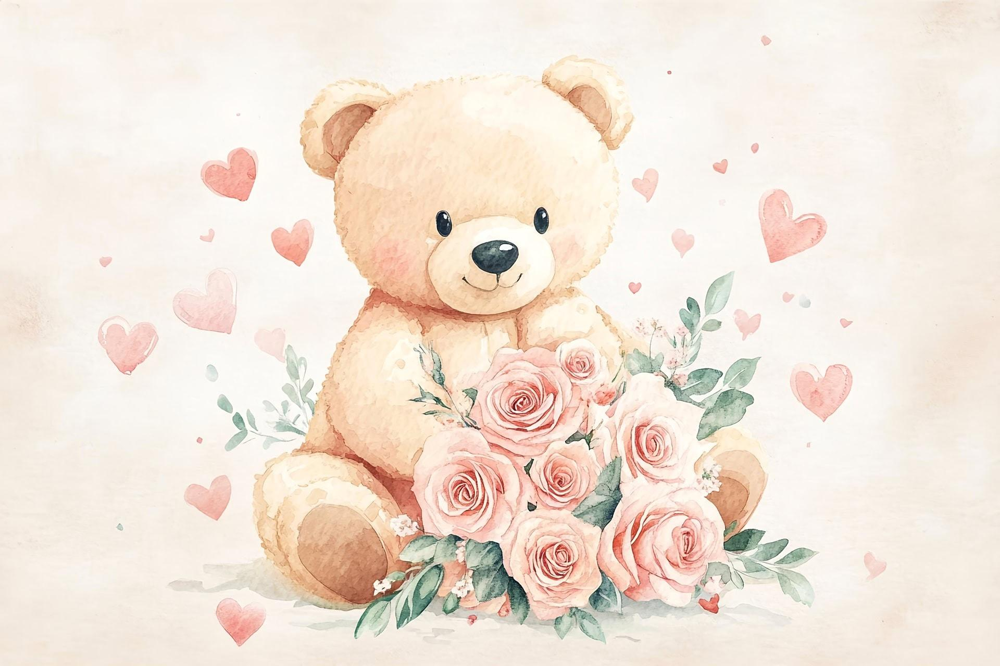

a little surprise

For you,
my favourite person
I made this tiny corner of the world just to say something from my heart.
please read this
💗
I'm sorry, love.
I'm sorry I haven't been talking to you as much lately. I never wanted you to feel ignored or unimportant.
you deserve to know
🌷
You are important to me.
My quiet moments don't mean my care has changed. You deserve my time, attention, and honest communication.
♡ You are never “too much” for wanting to talk.
♡ Your feelings matter to me.
the little things i miss
Our little talks
🌸 Your random stories
🧸 Our silly conversations
💌 Hearing about your day
They mean more to me than I always say.
a promise from me
🤍
I'll do better.
I'll make more effort to check in, listen, and communicate instead of letting busy days turn into silence.
Not just words — I'll show you.
✦
✧
one last hug
Can we start
with one conversation?
No pressure to reply right away. I just wanted you to know that I care about you, and I'm sorry. ❤️
🫂
Sending you the biggest hug ♡